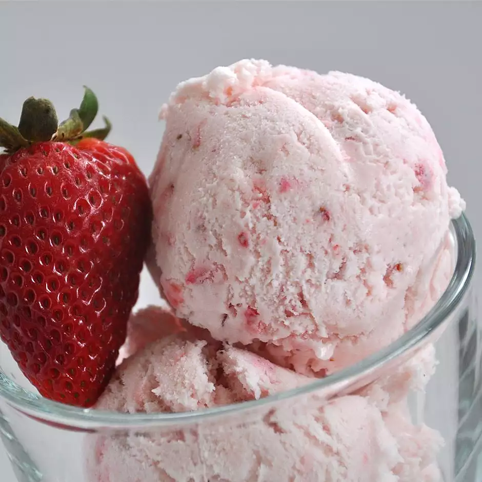

Strawberry Ice Cream

Description
Use your ice cream maker to create this rich and creamy strawberry ice cream. There are no eggs in this recipe.
Ingredients
- 2 cups whole milk
- 2 cups heavy cream
- 1 cup white sugar
- ¼ teaspoon salt
- 2 teaspoons vanilla extract
- 2 cups mashed fresh strawberries
- 2 drops red food coloring (Optional)
Steps
- In a large bowl, combine the milk, cream, sugar, salt, vanilla, strawberries, and food coloring. Pour the mixture into the freezer bowl of an ice cream maker, and freeze according to manufacturer's directions.